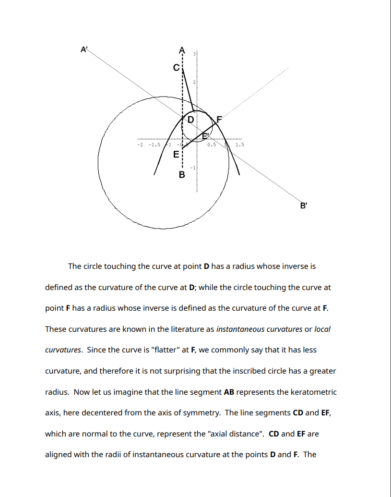

The Kernunos/CorneaCopia program is used to view and manipulate corneal topography data files. The program can input files, compute different properties of the surface data and display them. Files from different machines can be compared to each other.
 |
Open/Load, File, Browse, Export, Analyze, Color, Tweaks, View, About, README, FAQ, SECURITY